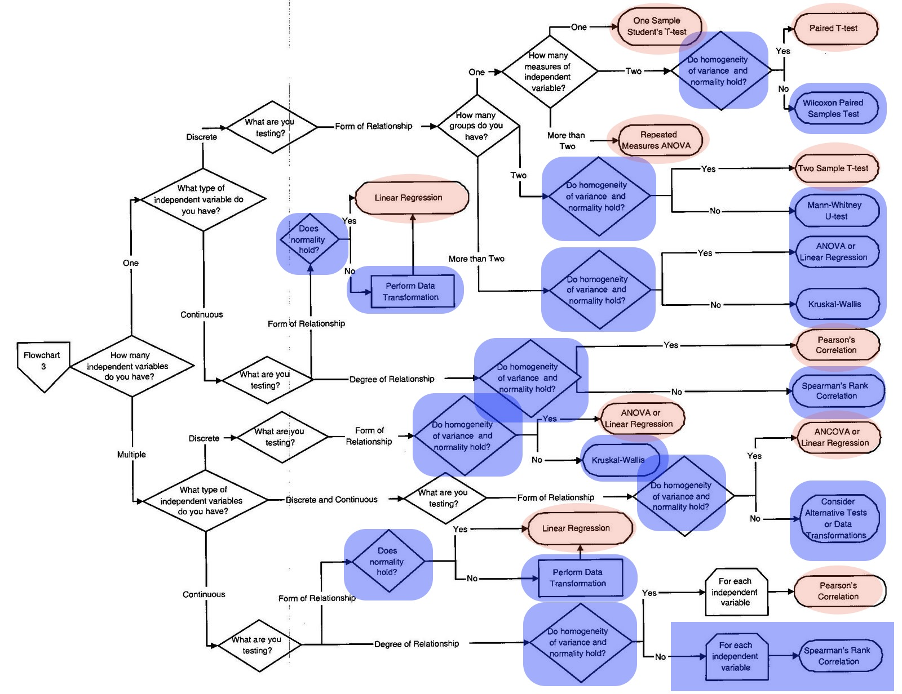

Instructor Teaching Notes for Lesson 39
Math300Z
Many statistical tests?
Students in Stat 101 are introduced to many differently named statistical tests. Such as the one-sample p-test, two-sample p-test, one-sample t-test, paired t-test, two-sample t-tests, and simple regression test (and sometimes ANOVA, “non-parametric” versions” of the tests and the “chi-squared test.” Since most researchers studied statistics in the Stat 101 style, they will use these names. But they are all equivalent to regression.[Logistic regression handles the most common setting for the chi-squared test.]
Students who take Stat 101 have to learn which test applies in which circumstance. To help them, flow-charts are available, like this one where the lozenges are the named tests.

{kind=link}
There are three groups of blocks:
- Unhighlighted
- Blue highlight
- Red highlight
Our flowchart is simpler. Ignore entirely the unhighlighted blocks. Then replace blue and red as indicated below.
Select the response variable, explanatory variable of interest (let’s call it “EVI”) and covariates (as appropriate).1
Check whether any of the numerical variables in (1) is seriously non-normal.
- If so, apply a rank transformation (or box-cox).
Fit regression model using specification from (1).
- If response is two-level categorical, convert to zero-one variable. Use
glm().2 - If there are no explanatory variables, use
response ~ 1and look at the intercept coefficient. - If cases are paired, reduce pair to a single difference. More generally, use pair ID among the covariates.3 [NEED BLOG POST.]
- If response is two-level categorical, convert to zero-one variable. Use
Select a summary method, depending on type of the EVI:
Confounding
Have Col. Horton tell the study of the concern about high numbers of NJPs (non-judicial proceedings for minor offenses) in the Global Strike Command. They were higher than in other commands.
But, stratifying by job category, it was found that the excess was attributable to the “police” job category, which had a much higher NJP rate than other categories. This is true across the Air Force. But there is a much larger proportion of police in the Global Strike Command than in other commands. Simpson’s paradox!